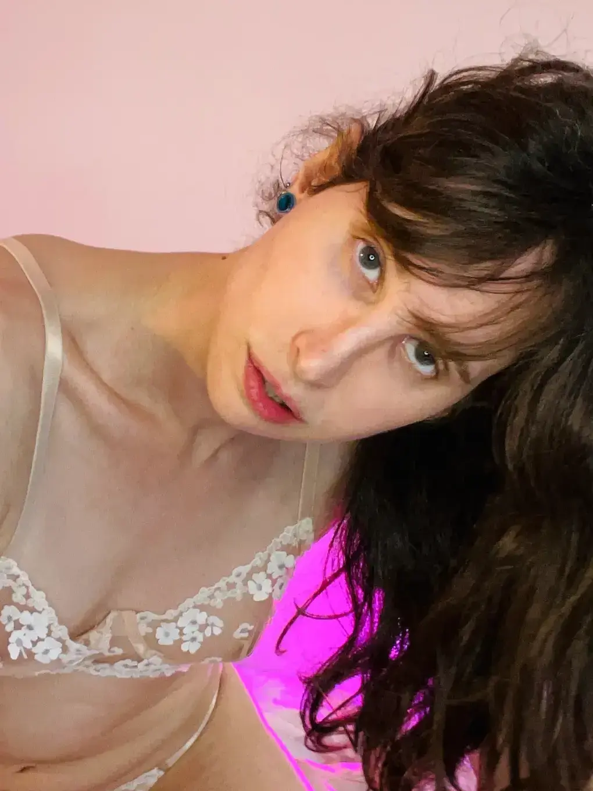

Je suis kissmaelis, vous pouvez m'appeler Maelis. Je suis une femme trans de 27 ans, opérée, vivant à Paris, en France.
Naturelle sans maquillage, je suis une grande femme de 1m80 avec de longs cheveux bruns ondulés. J'ai de petits seins naturels et mignons (B) et avec quelques poils en bas.
Je suis d'un tempéremment très joyeux, souriante, j'aime beaucoup rigoler et taquiner. Je suis accessible, intelligente et à l'écoute.
My name is kissmaelis, you can call me Maelis. I am 27 years old post-op trans women living in Paris, France.
Natural, I usually don’t do makeup, I am a tall woman of 1m80 (5'11") with long brown wavy hair. I have natural small cute breast (B cup) and have a bit of a bush.
I'm a joyfull woman, always smilling and I like to laught and being playful.